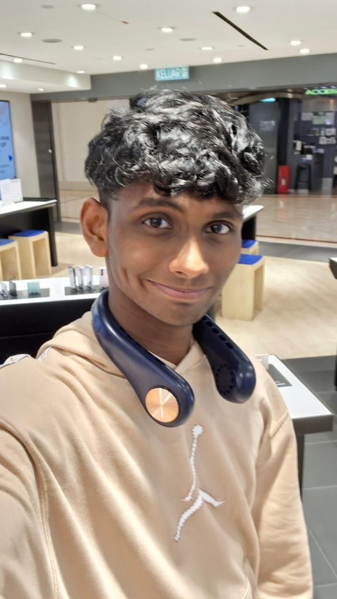
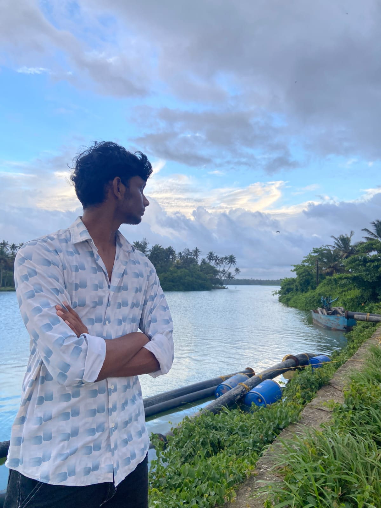
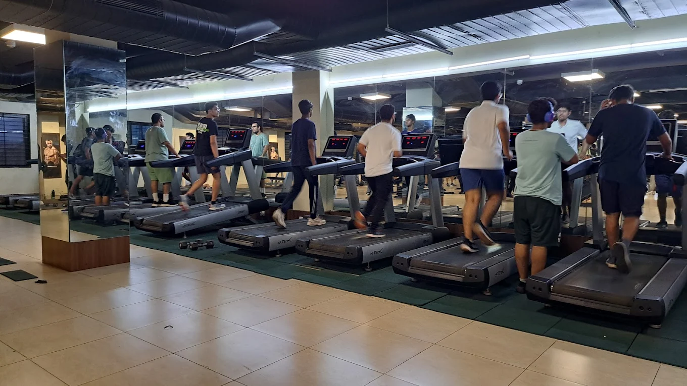

Who Am I?
I am a 2nd-year CSE Core student at VIT Vellore. My journey in tech started with curiosity about how games worked, which quickly evolved into a passion for C++ and Web Development.
I am driven by leadership and teamwork. I believe that the best software is built when great minds collaborate to solve real-world engineering challenges.

Life Beyond Code
When I am not debugging code, you can find me at the Gym. Discipline in fitness translates to discipline in coding.
I am also a huge Foodie and enjoy exploring new spots in Vellore. And of course, I unwind with Gaming sessions on weekends. These interests keep me balanced and creative.